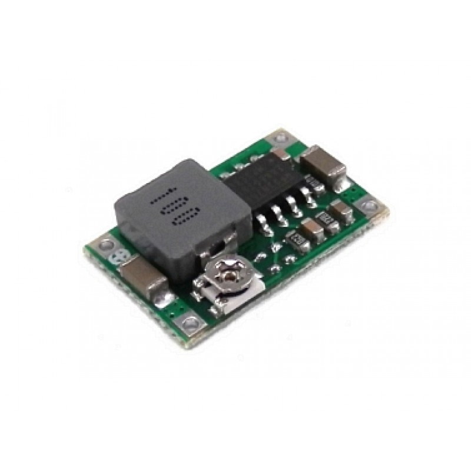

DC-DC

Mini360 (DSN-MINI-360) - миниатюрный понижающий DC-DC преобразователь на чипе MP1482DS.
За счет высокой частоты преобразования, модуль позволяет получить большой для своих размеров ток в нагрузке - 1.8А. Выходное напряжение регулируется подстроечным резистором.
За счет легкости в монтаже на другие платы, компактности и доступности по цене, Mini360 часто используют в готовых устройствах.
Характеристики:
Входное напряжение: 4.75В - 18В
Выходное напряжение: 0,9В - 15В
Выходной ток: 1.8 А(рабочий), 3А (пиковый)
Частота переключения: 340кГц
Пульсация выходного сигнала: менее чем 30мВ
Эффективность: 96% (макс)
Рабочая температура: от -40 C до + 85 С
Размеры: 17мм x 11мм x 3.8мм